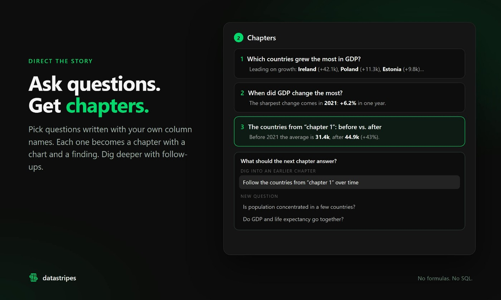

表格里的问题先于版式
Data Stories面向经常把表格整理成简报的人。输入可以是CSV、Excel或Google Sheets，用户先说明要回答的问题，系统再安排关键数字、变化和比较，并配上图表及文字。十一月六日的Product Hunt页面把它作为新的叙事功能发布，不能把更早的Datastripes电子表格和可视化能力一起算作当天首发。厂商列出文章、幻灯片等多种发布格式；实际节省的是复制数值、排图和重写开头的重复劳动，数据是否适合回答这个问题仍由作者负责。
Datastripes Data Stories · 官方产品资料／Product Hunt 发布页

Data Stories面向经常把表格整理成简报的人。输入可以是CSV、Excel或Google Sheets，用户先说明要回答的问题，系统再安排关键数字、变化和比较，并配上图表及文字。十一月六日的Product Hunt页面把它作为新的叙事功能发布，不能把更早的Datastripes电子表格和可视化能力一起算作当天首发。厂商列出文章、幻灯片等多种发布格式；实际节省的是复制数值、排图和重写开头的重复劳动，数据是否适合回答这个问题仍由作者负责。
官网允许修改每一句话、调整章节顺序和更换图形，同一数据还能切换故事与仪表盘两种视角。前者给读者一条阅读顺序，后者让读者按自己的问题继续筛选。这个分工适合把固定汇报与自助查看放在一个入口，避免为每次追问另做截图。它也带来一致性要求：如果作者把比较对象或时间范围改了，文字中的百分比和图表中的筛选范围就要重新核对，不能默认排在一起的两块内容天然采用同一口径。
发布页称作者可先写希望读者得到的结论，工具列出支持它的章节，也指出数据不支持之处。这一入口能暴露论据空白，却也容易让人从已有立场倒找材料。实用的验收方法是加入一个已知反例，检查它是否仍被展示；再用总量与比例相反的样表，观察标题有没有混淆两者。没有独立测试证明该功能能识别抽样偏差或因果错误。即使所有数值都抄对了，缺少分母、单位或时间背景的句子依然可能误导读者。
主页称原始行留在浏览器，AI接收压缩后的结构信息，因此本地保存与模型处理是两个不同环节。准备公开故事时，作者还要决定哪些字段适合读者看到。收费入口也不同：PH作者介绍每项目免费预览、五欧元解锁；故事页面则列出带署名的免费发布和每月十九欧元Reporter。这些描述尚未通过结账核对，不能拼成一套统一权益。一次性报告与每月持续更新的报告，应分别确认购买的是哪个入口。图表和段落都可编辑，方便保留报告结构，但上个月仍然通顺的文字不会因此自动适合这个月的数据；作者需要把数据变化和解释放在一起处理。